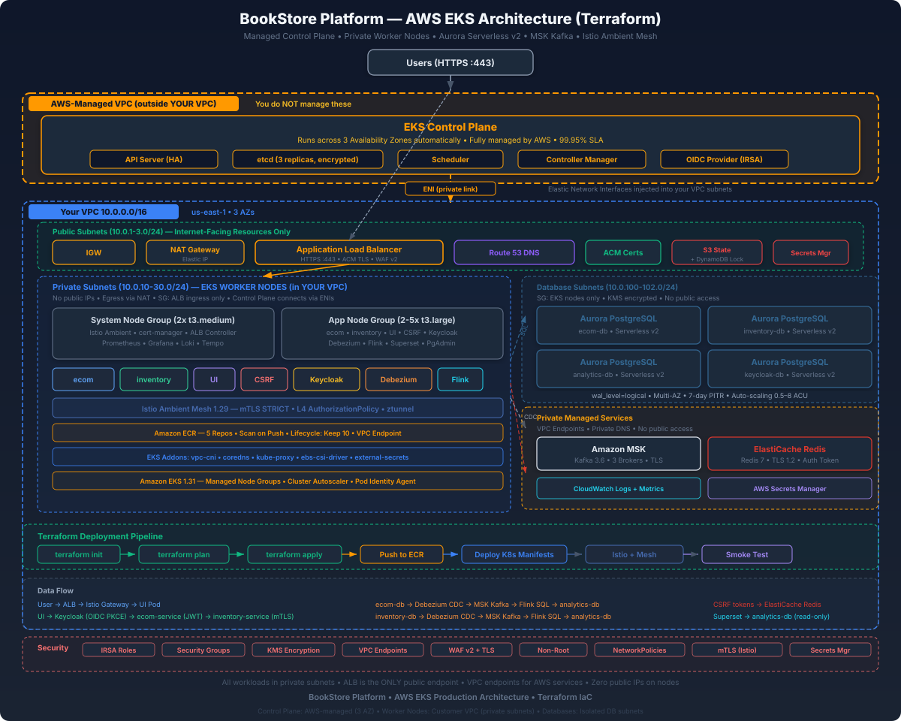

Deploy the full BookStore Platform to AWS using Terraform — EKS, Aurora, MSK, ElastiCache, and more
The BookStore Platform maps directly from local kind infrastructure to AWS managed services. Every component has a 1:1 replacement that provides production-grade availability, scaling, and security.

| Local (kind) | AWS Service | Why |
|---|---|---|
| kind Kubernetes cluster | Amazon EKS | Managed control plane, auto-upgrades, IAM integration |
| CloudNativePG (4 clusters) | Aurora PostgreSQL Serverless v2 | Auto-scaling, automated backups, Multi-AZ HA |
| Self-hosted Kafka (KRaft) | Amazon MSK | Managed brokers, auto-patching, IAM auth |
| Self-hosted Redis | ElastiCache Redis | Managed clustering, failover, encryption |
| cert-manager self-signed CA | ACM + Route53 | Free public TLS certs, auto-renewal |
| kind NodePorts | ALB (Load Balancer Controller) | Layer 7 routing, WAF integration, auto-scaling |
| Local Docker images | Amazon ECR | Private registry, vulnerability scanning, lifecycle policies |
| K8s Secrets | AWS Secrets Manager | Rotation, audit logging, cross-account access |
| Local ./data/ directories | EBS CSI + gp3 volumes | Durable block storage, snapshots |
| Istio Ambient Mesh | Istio Ambient on EKS | Same mesh, managed nodes, ztunnel DaemonSet |
aws configure with valid credentials# macOS (Homebrew)
brew install awscli terraform kubectl helm istioctl docker jq
# Verify all tools
aws --version
terraform --version
kubectl version --client
helm version --short
istioctl version --remote=false
docker --version
# Configure AWS credentials
aws configure
# Enter: Access Key ID, Secret Access Key, Region (us-east-1), Output (json)
# Verify AWS access
aws sts get-caller-identity00- through 12- to indicate logical dependency order. Terraform processes all .tf files together, but the numbering helps human readers follow the flow.
Terraform state must be stored remotely for team collaboration and state locking. An S3 bucket stores the state file and DynamoDB provides distributed locking to prevent concurrent modifications.
terraform init. Run the bootstrap commands below first, or comment out the backend block for the initial run and migrate later.
# ─────────────────────────────────────────────────────────────────────
# 00-backend.tf — Remote state storage in S3 with DynamoDB locking
#
# WHY: Terraform state contains sensitive data (DB passwords, endpoints)
# and must be stored securely with locking to prevent race conditions
# when multiple team members run terraform simultaneously.
#
# LOCAL EQUIVALENT: On kind, state is implicit (cluster IS the state).
# On AWS, we need explicit state tracking for reproducibility.
# ─────────────────────────────────────────────────────────────────────
terraform {
backend "s3" {
# S3 bucket for state storage — must exist before terraform init
bucket = "bookstore-terraform-state"
# State file path within the bucket — use env prefix for multi-env
key = "bookstore/terraform.tfstate"
# AWS region for the bucket
region = "us-east-1"
# DynamoDB table for state locking — prevents concurrent applies
dynamodb_table = "bookstore-terraform-locks"
# Encrypt state at rest — state contains DB passwords and endpoints
encrypt = true
}
}
# ─────────────────────────────────────────────────────────────────────
# Bootstrap: Create the S3 bucket and DynamoDB table BEFORE terraform init.
# Run these AWS CLI commands once:
#
# aws s3api create-bucket \
# --bucket bookstore-terraform-state \
# --region us-east-1
#
# aws s3api put-bucket-versioning \
# --bucket bookstore-terraform-state \
# --versioning-configuration Status=Enabled
#
# aws s3api put-bucket-encryption \
# --bucket bookstore-terraform-state \
# --server-side-encryption-configuration \
# '{"Rules":[{"ApplyServerSideEncryptionByDefault":{"SSEAlgorithm":"aws:kms"}}]}'
#
# aws s3api put-public-access-block \
# --bucket bookstore-terraform-state \
# --public-access-block-configuration \
# BlockPublicAcls=true,IgnorePublicAcls=true,BlockPublicPolicy=true,RestrictPublicBuckets=true
#
# aws dynamodb create-table \
# --table-name bookstore-terraform-locks \
# --attribute-definitions AttributeName=LockID,AttributeType=S \
# --key-schema AttributeName=LockID,KeyType=HASH \
# --billing-mode PAY_PER_REQUEST \
# --region us-east-1
# ─────────────────────────────────────────────────────────────────────Pin all provider versions to avoid unexpected breaking changes. The AWS provider manages infrastructure, while the Kubernetes and Helm providers deploy workloads into the EKS cluster.
# ─────────────────────────────────────────────────────────────────────
# 01-versions.tf — Provider version constraints
#
# WHY: Pinning provider versions ensures reproducible deployments.
# The ~> operator allows patch updates (e.g., 5.0.x) but not minor/major.
# ─────────────────────────────────────────────────────────────────────
terraform {
required_version = ">= 1.7.0"
required_providers {
# AWS provider — manages all AWS resources (VPC, EKS, RDS, MSK, etc.)
aws = {
source = "hashicorp/aws"
version = "~> 5.0"
}
# Kubernetes provider — creates namespaces, configmaps, secrets in EKS
kubernetes = {
source = "hashicorp/kubernetes"
version = "~> 2.35"
}
# Helm provider — installs Istio, ALB Controller, cert-manager via charts
helm = {
source = "hashicorp/helm"
version = "~> 2.17"
}
# TLS provider — generates random passwords for databases
random = {
source = "hashicorp/random"
version = "~> 3.6"
}
}
}
# ─────────────────────────────────────────────────────────────────────
# AWS provider configuration
# Uses credentials from AWS CLI profile or environment variables
# ─────────────────────────────────────────────────────────────────────
provider "aws" {
region = var.aws_region
default_tags {
tags = {
Project = "bookstore"
Environment = var.environment
ManagedBy = "terraform"
}
}
}
# ─────────────────────────────────────────────────────────────────────
# Kubernetes provider — configured AFTER EKS cluster is created
# Uses the EKS cluster endpoint and auth token for API access
# ─────────────────────────────────────────────────────────────────────
provider "kubernetes" {
host = module.eks.cluster_endpoint
cluster_ca_certificate = base64decode(module.eks.cluster_certificate_authority_data)
exec {
api_version = "client.authentication.k8s.io/v1beta1"
command = "aws"
args = ["eks", "get-token", "--cluster-name", module.eks.cluster_name]
}
}
# ─────────────────────────────────────────────────────────────────────
# Helm provider — same auth as Kubernetes provider
# Used to install Istio, ALB Controller, External Secrets Operator
# ─────────────────────────────────────────────────────────────────────
provider "helm" {
kubernetes {
host = module.eks.cluster_endpoint
cluster_ca_certificate = base64decode(module.eks.cluster_certificate_authority_data)
exec {
api_version = "client.authentication.k8s.io/v1beta1"
command = "aws"
args = ["eks", "get-token", "--cluster-name", module.eks.cluster_name]
}
}
}All configurable values are defined as variables with sensible defaults. Override them in terraform.tfvars for your environment.
# ─────────────────────────────────────────────────────────────────────
# 02-variables.tf — All input variables for the BookStore deployment
#
# Override these in terraform.tfvars (see terraform.tfvars.example).
# Secrets (DB passwords) are generated randomly if not provided.
# ─────────────────────────────────────────────────────────────────────
# ── Region & Environment ──────────────────────────────────────────
variable "aws_region" {
description = "AWS region to deploy all resources into"
type = string
default = "us-east-1"
}
variable "environment" {
description = "Environment name (dev, staging, prod) — used in resource naming and tags"
type = string
default = "dev"
validation {
condition = contains(["dev", "staging", "prod"], var.environment)
error_message = "Environment must be one of: dev, staging, prod."
}
}
variable "project_name" {
description = "Project name used as prefix for all resource names"
type = string
default = "bookstore"
}
# ── Networking ────────────────────────────────────────────────────
variable "vpc_cidr" {
description = "CIDR block for the VPC — /16 gives 65,536 IPs"
type = string
default = "10.0.0.0/16"
}
variable "availability_zones" {
description = "List of AZs to deploy across — 3 for HA"
type = list(string)
default = ["us-east-1a", "us-east-1b", "us-east-1c"]
}
variable "single_nat_gateway" {
description = "Use single NAT Gateway (cost saving for dev). Set false for prod HA."
type = bool
default = true
}
# ── EKS Cluster ──────────────────────────────────────────────────
variable "cluster_name" {
description = "Name of the EKS cluster"
type = string
default = "bookstore"
}
variable "cluster_version" {
description = "Kubernetes version for EKS — must be supported by AWS"
type = string
default = "1.31"
}
variable "system_node_instance_types" {
description = "EC2 instance types for the system node group (infra workloads)"
type = list(string)
default = ["t3.medium"]
}
variable "system_node_desired" {
description = "Desired number of system nodes"
type = number
default = 2
}
variable "app_node_instance_types" {
description = "EC2 instance types for the app node group (application workloads)"
type = list(string)
default = ["t3.large"]
}
variable "app_node_min" {
description = "Minimum number of app nodes (autoscaling lower bound)"
type = number
default = 2
}
variable "app_node_max" {
description = "Maximum number of app nodes (autoscaling upper bound)"
type = number
default = 5
}
variable "app_node_desired" {
description = "Desired number of app nodes at initial deployment"
type = number
default = 2
}
# ── Database (Aurora PostgreSQL) ──────────────────────────────────
variable "db_engine_version" {
description = "Aurora PostgreSQL engine version"
type = string
default = "16.4"
}
variable "db_min_capacity" {
description = "Minimum ACU for Aurora Serverless v2 (0.5 = smallest, cheapest)"
type = number
default = 0.5
}
variable "db_max_capacity" {
description = "Maximum ACU for Aurora Serverless v2 (4 ACU for dev, 16+ for prod)"
type = number
default = 4
}
variable "db_backup_retention" {
description = "Number of days to retain automated backups"
type = number
default = 7
}
variable "db_deletion_protection" {
description = "Enable deletion protection — set true for prod"
type = bool
default = false
}
# ── Kafka (MSK) ──────────────────────────────────────────────────
variable "msk_instance_type" {
description = "MSK broker instance type — kafka.t3.small for dev, kafka.m5.large for prod"
type = string
default = "kafka.t3.small"
}
variable "msk_broker_count" {
description = "Number of MSK brokers (must be multiple of AZ count)"
type = number
default = 3
}
variable "msk_kafka_version" {
description = "Kafka version for MSK"
type = string
default = "3.6.0"
}
variable "msk_ebs_volume_size" {
description = "EBS volume size (GB) per broker for log storage"
type = number
default = 100
}
# ── Redis (ElastiCache) ──────────────────────────────────────────
variable "redis_node_type" {
description = "ElastiCache node type — cache.t3.micro for dev, cache.r7g.large for prod"
type = string
default = "cache.t3.micro"
}
variable "redis_num_cache_nodes" {
description = "Number of Redis nodes (1 for dev, 2+ for prod Multi-AZ)"
type = number
default = 1
}
variable "redis_engine_version" {
description = "Redis engine version"
type = string
default = "7.1"
}
# ── DNS & TLS ────────────────────────────────────────────────────
variable "domain_name" {
description = "Root domain name for the platform (e.g., bookstore.example.com)"
type = string
}
variable "route53_zone_id" {
description = "Existing Route53 hosted zone ID. Leave empty to create a new zone."
type = string
default = ""
}
# ── Keycloak ─────────────────────────────────────────────────────
variable "keycloak_admin_password" {
description = "Keycloak admin console password"
type = string
sensitive = true
default = ""
}
# ── Tags ─────────────────────────────────────────────────────────
variable "extra_tags" {
description = "Additional tags to apply to all resources"
type = map(string)
default = {}
}The VPC provides network isolation with three subnet tiers: public (ALB, NAT), private (EKS nodes), and database (RDS, ElastiCache). This replaces the kind cluster's flat Docker network.
# ─────────────────────────────────────────────────────────────────────
# 03-vpc.tf — VPC, Subnets, NAT Gateway, Internet Gateway
#
# LOCAL EQUIVALENT: kind uses Docker's bridge network (172.x.x.x).
# On AWS, we need explicit VPC with 3 tiers:
# - Public subnets: ALB, NAT Gateway (internet-facing)
# - Private subnets: EKS worker nodes, MSK (no direct internet)
# - Database subnets: RDS, ElastiCache (most restricted)
#
# Using the official terraform-aws-modules/vpc module for best practices.
# ─────────────────────────────────────────────────────────────────────
# Fetch available AZs in the region — used for subnet distribution
data "aws_availability_zones" "available" {
state = "available"
filter {
name = "zone-type"
values = ["availability-zone"]
}
}
# ─────────────────────────────────────────────────────────────────────
# VPC Module — creates VPC + all networking infrastructure
# ─────────────────────────────────────────────────────────────────────
module "vpc" {
source = "terraform-aws-modules/vpc/aws"
version = "~> 5.16"
name = "${var.project_name}-${var.environment}-vpc"
cidr = var.vpc_cidr
# Deploy across 3 AZs for high availability
azs = var.availability_zones
# ── Public Subnets ──────────────────────────────────────────────
# These host the ALB and NAT Gateway. They have direct internet access
# via the Internet Gateway. EKS tags enable the ALB Controller to
# auto-discover these subnets for internet-facing load balancers.
# ──────────────────────────────────────────────────────────────────
public_subnets = ["10.0.1.0/24", "10.0.2.0/24", "10.0.3.0/24"]
public_subnet_tags = {
"kubernetes.io/role/elb" = 1
"kubernetes.io/cluster/${var.cluster_name}" = "shared"
}
# ── Private Subnets ─────────────────────────────────────────────
# EKS worker nodes run here. They access the internet through NAT
# Gateway (for pulling container images, etc.) but are not directly
# reachable from the internet. The internal-elb tag enables the ALB
# Controller to create internal load balancers in these subnets.
# ──────────────────────────────────────────────────────────────────
private_subnets = ["10.0.10.0/24", "10.0.20.0/24", "10.0.30.0/24"]
private_subnet_tags = {
"kubernetes.io/role/internal-elb" = 1
"kubernetes.io/cluster/${var.cluster_name}" = "shared"
}
# ── Database Subnets ────────────────────────────────────────────
# Aurora RDS and ElastiCache run here. Most restricted tier — no
# internet access at all. Only reachable from private subnets
# (EKS nodes) via security groups.
#
# LOCAL EQUIVALENT: On kind, PostgreSQL pods run in the same cluster
# network. On AWS, they're in an isolated subnet tier for defense
# in depth.
# ──────────────────────────────────────────────────────────────────
database_subnets = ["10.0.100.0/24", "10.0.101.0/24", "10.0.102.0/24"]
database_subnet_tags = {
"Purpose" = "databases"
}
# Create a DB subnet group that RDS and ElastiCache can reference
create_database_subnet_group = true
create_database_subnet_route_table = true
database_subnet_group_name = "${var.project_name}-${var.environment}-db"
# ── NAT Gateway ─────────────────────────────────────────────────
# Allows private subnet resources to reach the internet (outbound only).
# Single NAT for dev ($32/month savings), one per AZ for prod HA.
# ──────────────────────────────────────────────────────────────────
enable_nat_gateway = true
single_nat_gateway = var.single_nat_gateway
one_nat_gateway_per_az = !var.single_nat_gateway
# ── DNS ─────────────────────────────────────────────────────────
# Required for EKS service discovery and RDS endpoint resolution
# ──────────────────────────────────────────────────────────────────
enable_dns_hostnames = true
enable_dns_support = true
# ── Flow Logs (optional, recommended for prod) ─────────────────
# Captures network traffic metadata for security auditing
# ──────────────────────────────────────────────────────────────────
enable_flow_log = var.environment == "prod"
create_flow_log_cloudwatch_log_group = var.environment == "prod"
create_flow_log_iam_role = var.environment == "prod"
tags = merge(var.extra_tags, {
Component = "networking"
})
}single_nat_gateway = false so each AZ has its own NAT Gateway, eliminating cross-AZ traffic charges and the single point of failure.
Amazon EKS replaces the local kind cluster. Two managed node groups separate infrastructure workloads (Istio, Debezium, Flink) from application workloads (ecom-service, inventory-service, UI).
04-eks.tf only defines node groups, not the control plane infrastructure.cluster_endpoint_private_access = true, kubectl traffic stays within the VPC (via the ENIs) and never traverses the public internet.# ─────────────────────────────────────────────────────────────────────
# 04-eks.tf — Amazon EKS Cluster with Managed Node Groups
#
# LOCAL EQUIVALENT: kind cluster with 1 control-plane + 2 worker nodes.
# On AWS, EKS manages the control plane (API server, etcd, scheduler).
# We only manage the worker node groups.
#
# KEY DIFFERENCES FROM KIND:
# - No NodePort exposure needed — ALB handles ingress
# - OIDC provider enables IRSA (pod-level IAM roles)
# - EBS CSI driver replaces kind's local-hostpath StorageClass
# - Node autoscaling replaces static node count
# ─────────────────────────────────────────────────────────────────────
module "eks" {
source = "terraform-aws-modules/eks/aws"
version = "~> 20.31"
# ── Cluster Identity ────────────────────────────────────────────
cluster_name = var.cluster_name
cluster_version = var.cluster_version
# ── Networking ──────────────────────────────────────────────────
# Control plane runs in AWS-managed VPC. Worker nodes run in our
# private subnets. The control plane ENIs are placed in private
# subnets for security.
# ──────────────────────────────────────────────────────────────────
vpc_id = module.vpc.vpc_id
subnet_ids = module.vpc.private_subnets
# Allow public access to the K8s API (for terraform/kubectl from dev machine)
# In production, restrict to VPN CIDR or disable entirely
cluster_endpoint_public_access = true
# ── EKS Addons ──────────────────────────────────────────────────
# These are AWS-maintained components that run inside the cluster.
#
# vpc-cni: Pod networking — assigns VPC IPs directly to pods
# coredns: DNS resolution inside the cluster
# kube-proxy: Service routing (iptables/IPVS rules)
# ebs-csi-driver: Persistent volumes backed by EBS (replaces kind's
# local-hostpath StorageClass)
# ──────────────────────────────────────────────────────────────────
cluster_addons = {
vpc-cni = {
most_recent = true
configuration_values = jsonencode({
env = {
# Enable prefix delegation for higher pod density per node
ENABLE_PREFIX_DELEGATION = "true"
}
})
}
coredns = {
most_recent = true
}
kube-proxy = {
most_recent = true
}
aws-ebs-csi-driver = {
most_recent = true
service_account_role_arn = module.ebs_csi_irsa.iam_role_arn
}
}
# ── OIDC Provider ───────────────────────────────────────────────
# Enables IRSA (IAM Roles for Service Accounts) — pods assume
# specific IAM roles instead of using the node's broad role.
# This is how ecom-service gets RDS access without storing
# AWS credentials.
# ──────────────────────────────────────────────────────────────────
enable_irsa = true
# ── Managed Node Groups ─────────────────────────────────────────
# Two groups with different instance sizes for workload separation:
#
# system: Infrastructure pods (Istio, Debezium, Kafka clients, Flink)
# t3.medium (2 vCPU, 4 GB) — fixed count for predictability
#
# app: Application pods (ecom, inventory, UI, Keycloak)
# t3.large (2 vCPU, 8 GB) — autoscaling 2-5 for traffic spikes
# ──────────────────────────────────────────────────────────────────
eks_managed_node_groups = {
system = {
name = "${var.cluster_name}-system"
instance_types = var.system_node_instance_types
capacity_type = "ON_DEMAND"
# Fixed size — infra pods need predictable capacity
min_size = var.system_node_desired
max_size = var.system_node_desired
desired_size = var.system_node_desired
# Labels for pod scheduling — use nodeSelector in K8s manifests
labels = {
"nodegroup" = "system"
"workload" = "infrastructure"
}
# Taint so only infra pods schedule here (must tolerate)
taints = [{
key = "workload"
value = "system"
effect = "NO_SCHEDULE"
}]
# EBS root volume for node OS + container runtime
block_device_mappings = {
xvda = {
device_name = "/dev/xvda"
ebs = {
volume_size = 50
volume_type = "gp3"
encrypted = true
delete_on_termination = true
}
}
}
tags = {
NodeGroup = "system"
}
}
app = {
name = "${var.cluster_name}-app"
instance_types = var.app_node_instance_types
capacity_type = "ON_DEMAND"
# Autoscaling range — scales between min and max based on demand
# The Cluster Autoscaler (or Karpenter) triggers scaling
min_size = var.app_node_min
max_size = var.app_node_max
desired_size = var.app_node_desired
labels = {
"nodegroup" = "app"
"workload" = "application"
}
block_device_mappings = {
xvda = {
device_name = "/dev/xvda"
ebs = {
volume_size = 80
volume_type = "gp3"
encrypted = true
delete_on_termination = true
}
}
}
tags = {
NodeGroup = "app"
}
}
}
# ── Access Configuration ────────────────────────────────────────
# EKS access entries replace the legacy aws-auth ConfigMap.
# Grant the Terraform executor cluster admin access.
# ──────────────────────────────────────────────────────────────────
enable_cluster_creator_admin_permissions = true
# ── Cluster Security Group ──────────────────────────────────────
# Additional rules for the cluster security group
cluster_security_group_additional_rules = {
ingress_nodes_ephemeral_ports_tcp = {
description = "Nodes on ephemeral ports"
protocol = "tcp"
from_port = 1025
to_port = 65535
type = "ingress"
source_node_security_group = true
}
}
# ── Node Security Group ─────────────────────────────────────────
# Additional rules for worker node communication
node_security_group_additional_rules = {
# Allow nodes to communicate with each other on all ports
# Required for Istio Ambient's ztunnel HBONE tunnels (port 15008)
ingress_self_all = {
description = "Node to node all ports/protocols"
protocol = "-1"
from_port = 0
to_port = 0
type = "ingress"
self = true
}
# Allow all egress from nodes (for NAT Gateway internet access)
egress_all = {
description = "Node all egress"
protocol = "-1"
from_port = 0
to_port = 0
type = "egress"
cidr_blocks = ["0.0.0.0/0"]
}
}
tags = merge(var.extra_tags, {
Component = "compute"
})
}
# ─────────────────────────────────────────────────────────────────────
# EBS CSI Driver IRSA — allows the EBS CSI driver to manage EBS volumes
# This replaces kind's local-hostpath StorageClass with real EBS volumes
# ─────────────────────────────────────────────────────────────────────
module "ebs_csi_irsa" {
source = "terraform-aws-modules/iam/aws//modules/iam-role-for-service-accounts-eks"
version = "~> 5.47"
role_name = "${var.cluster_name}-ebs-csi-driver"
attach_ebs_csi_policy = true
oidc_providers = {
main = {
provider_arn = module.eks.oidc_provider_arn
namespace_service_accounts = ["kube-system:ebs-csi-controller-sa"]
}
}
tags = var.extra_tags
}workload=system:NoSchedule taint. Only pods with a matching toleration will schedule there. Application pods (ecom, inventory, UI) go to the untainted app node group by default.
ECR provides private Docker image storage with vulnerability scanning. Each service gets its own repository with lifecycle policies to control storage costs.
# ─────────────────────────────────────────────────────────────────────
# 05-ecr.tf — Amazon Elastic Container Registry repositories
#
# LOCAL EQUIVALENT: On kind, images are built locally and loaded via
# `kind load docker-image`. On AWS, images are pushed to ECR and
# pulled by EKS nodes via the ECR VPC endpoint.
#
# Creates 5 repositories — one per buildable service:
# - ecom-service (Spring Boot Java app)
# - inventory-service (Python FastAPI app)
# - ui-service (React + Nginx)
# - csrf-service (Go microservice)
# - flink (Custom Flink image with SQL pipeline)
# ─────────────────────────────────────────────────────────────────────
locals {
# All container images that need ECR repositories
ecr_repositories = [
"ecom-service",
"inventory-service",
"ui-service",
"csrf-service",
"flink",
]
}
# ─────────────────────────────────────────────────────────────────────
# ECR Repositories — one per microservice
# ─────────────────────────────────────────────────────────────────────
resource "aws_ecr_repository" "services" {
for_each = toset(local.ecr_repositories)
name = "${var.project_name}/${each.key}"
# IMMUTABLE tags prevent overwriting existing image tags (safer deploys)
# Use MUTABLE during development if you push :latest frequently
image_tag_mutability = var.environment == "prod" ? "IMMUTABLE" : "MUTABLE"
# Scan images on push for CVEs (uses Amazon Inspector)
image_scanning_configuration {
scan_on_push = true
}
# Encrypt images at rest with AWS-managed KMS key
encryption_configuration {
encryption_type = "AES256"
}
# Force delete even if images exist (for dev teardown)
force_delete = var.environment != "prod"
tags = merge(var.extra_tags, {
Component = "registry"
Service = each.key
})
}
# ─────────────────────────────────────────────────────────────────────
# Lifecycle Policy — keep only the last 10 tagged images per repo
# Untagged images (intermediate layers) are cleaned up after 1 day.
# This prevents storage cost creep from old deployments.
# ─────────────────────────────────────────────────────────────────────
resource "aws_ecr_lifecycle_policy" "services" {
for_each = aws_ecr_repository.services
repository = each.value.name
policy = jsonencode({
rules = [
{
rulePriority = 1
description = "Remove untagged images after 1 day"
selection = {
tagStatus = "untagged"
countType = "sinceImagePushed"
countUnit = "days"
countNumber = 1
}
action = {
type = "expire"
}
},
{
rulePriority = 2
description = "Keep only the last 10 tagged images"
selection = {
tagStatus = "tagged"
tagPrefixList = ["v", "latest", "sha-"]
countType = "imageCountMoreThan"
countNumber = 10
}
action = {
type = "expire"
}
}
]
})
}Four Aurora PostgreSQL Serverless v2 clusters replace the four CloudNativePG clusters (ecom-db, inventory-db, analytics-db, keycloak-db). Serverless v2 scales automatically from 0.5 to 4 ACU, so you only pay for what you use.
wal_level=logical parameter is required for Debezium Change Data Capture. Aurora supports logical replication, but it must be enabled via a custom parameter group.
# ─────────────────────────────────────────────────────────────────────
# 06-rds.tf — Aurora PostgreSQL Serverless v2 (4 clusters)
#
# LOCAL EQUIVALENT: 4 CloudNativePG clusters (2 instances each: primary
# + standby). On AWS, Aurora handles replication, failover, backups,
# patching, and scaling automatically.
#
# KEY DIFFERENCES:
# - No init container migrations against localhost — services connect to
# Aurora endpoints via private DNS
# - wal_level=logical enabled via parameter group (for Debezium CDC)
# - Serverless v2: auto-scales ACUs (0.5 min = ~1 GB RAM, 4 max = ~8 GB)
# - Encryption at rest via KMS (automatic)
# - Automated backups with point-in-time recovery (7-day retention)
# ─────────────────────────────────────────────────────────────────────
# ── Random passwords for each database ──────────────────────────
resource "random_password" "db_passwords" {
for_each = toset(["ecom", "inventory", "analytics", "keycloak"])
length = 32
special = true
override_special = "!#$%&*()-_=+[]{}<>:?"
}
# ── Store passwords in AWS Secrets Manager ──────────────────────
resource "aws_secretsmanager_secret" "db_passwords" {
for_each = toset(["ecom", "inventory", "analytics", "keycloak"])
name = "${var.project_name}/${var.environment}/${each.key}-db-password"
description = "Database password for ${each.key} Aurora cluster"
tags = merge(var.extra_tags, {
Component = "database"
Service = each.key
})
}
resource "aws_secretsmanager_secret_version" "db_passwords" {
for_each = aws_secretsmanager_secret.db_passwords
secret_id = each.value.id
secret_string = jsonencode({
username = each.key
password = random_password.db_passwords[each.key].result
dbname = each.key
})
}
# ── Security Group for Aurora ────────────────────────────────────
# Only allows PostgreSQL traffic (5432) from EKS worker nodes.
# No internet access — databases are in isolated database subnets.
# ──────────────────────────────────────────────────────────────────
resource "aws_security_group" "aurora" {
name_prefix = "${var.project_name}-${var.environment}-aurora-"
description = "Security group for Aurora PostgreSQL clusters"
vpc_id = module.vpc.vpc_id
# Allow PostgreSQL from EKS worker nodes only
ingress {
description = "PostgreSQL from EKS nodes"
from_port = 5432
to_port = 5432
protocol = "tcp"
security_groups = [module.eks.node_security_group_id]
}
# No egress needed — Aurora doesn't initiate outbound connections
egress {
description = "Allow all outbound"
from_port = 0
to_port = 0
protocol = "-1"
cidr_blocks = ["0.0.0.0/0"]
}
tags = merge(var.extra_tags, {
Name = "${var.project_name}-${var.environment}-aurora-sg"
Component = "database"
})
lifecycle {
create_before_destroy = true
}
}
# ── Parameter Group with wal_level=logical ──────────────────────
# Required for Debezium CDC to read the PostgreSQL Write-Ahead Log.
# On kind, this was set via CNPG's postgresql.parameters in the
# Cluster CR. On Aurora, we use a cluster parameter group.
# ──────────────────────────────────────────────────────────────────
resource "aws_rds_cluster_parameter_group" "bookstore" {
name_prefix = "${var.project_name}-${var.environment}-pg16-"
family = "aurora-postgresql16"
description = "BookStore Aurora PostgreSQL parameters with logical replication"
# Enable logical replication for Debezium CDC
parameter {
name = "rds.logical_replication"
value = "1"
apply_method = "pending-reboot"
}
# Set max replication slots (one per Debezium connector + headroom)
parameter {
name = "max_replication_slots"
value = "10"
apply_method = "pending-reboot"
}
# Set max WAL senders for replication connections
parameter {
name = "max_wal_senders"
value = "10"
apply_method = "pending-reboot"
}
# Shared preload libraries for logical decoding
parameter {
name = "shared_preload_libraries"
value = "pglogical"
apply_method = "pending-reboot"
}
tags = merge(var.extra_tags, {
Component = "database"
})
lifecycle {
create_before_destroy = true
}
}
# ── Aurora Clusters ─────────────────────────────────────────────
# One cluster per service — strict DB isolation (same as local setup).
# Each cluster has a writer instance (primary) and auto-creates a
# reader instance for failover in Multi-AZ.
# ──────────────────────────────────────────────────────────────────
locals {
databases = {
ecom = {
database_name = "ecom"
description = "E-Commerce Service database (books, orders, cart)"
}
inventory = {
database_name = "inventory"
description = "Inventory Service database (stock levels)"
}
analytics = {
database_name = "analytics"
description = "Analytics pipeline sink database (Flink CDC output)"
}
keycloak = {
database_name = "keycloak"
description = "Keycloak identity provider database"
}
}
}
resource "aws_rds_cluster" "databases" {
for_each = local.databases
cluster_identifier = "${var.project_name}-${var.environment}-${each.key}-db"
engine = "aurora-postgresql"
engine_mode = "provisioned"
engine_version = var.db_engine_version
database_name = each.value.database_name
# Master credentials — stored in Secrets Manager
master_username = each.key
master_password = random_password.db_passwords[each.key].result
# Network configuration — isolated in database subnets
db_subnet_group_name = module.vpc.database_subnet_group_name
vpc_security_group_ids = [aws_security_group.aurora.id]
# Custom parameter group with wal_level=logical for CDC
db_cluster_parameter_group_name = aws_rds_cluster_parameter_group.bookstore.name
# Serverless v2 scaling configuration
serverlessv2_scaling_configuration {
min_capacity = var.db_min_capacity
max_capacity = var.db_max_capacity
}
# Backup configuration — 7-day retention with preferred window
backup_retention_period = var.db_backup_retention
preferred_backup_window = "03:00-04:00"
# Maintenance window — updates applied during low-traffic hours
preferred_maintenance_window = "sun:04:00-sun:05:00"
# Encryption at rest using AWS-managed KMS key
storage_encrypted = true
# Skip final snapshot for dev (set false in prod)
skip_final_snapshot = var.environment != "prod"
final_snapshot_identifier = var.environment == "prod" ? "${var.project_name}-${each.key}-final-${formatdate("YYYY-MM-DD", timestamp())}" : null
# Deletion protection — prevent accidental destruction in prod
deletion_protection = var.db_deletion_protection
# Enable CloudWatch log exports for audit
enabled_cloudwatch_logs_exports = ["postgresql"]
# Apply changes immediately in dev, during maintenance window in prod
apply_immediately = var.environment != "prod"
tags = merge(var.extra_tags, {
Component = "database"
Service = each.key
Description = each.value.description
})
}
# ── Aurora Instances (Serverless v2) ────────────────────────────
# Each cluster gets one writer instance. Aurora automatically handles
# replication and failover. Serverless v2 scales ACUs (compute) based
# on actual workload.
# ──────────────────────────────────────────────────────────────────
resource "aws_rds_cluster_instance" "databases" {
for_each = local.databases
identifier = "${var.project_name}-${var.environment}-${each.key}-db-1"
cluster_identifier = aws_rds_cluster.databases[each.key].id
instance_class = "db.serverless"
engine = "aurora-postgresql"
engine_version = var.db_engine_version
# Performance Insights for query analysis (free tier: 7 days)
performance_insights_enabled = true
performance_insights_retention_period = 7
# Enable enhanced monitoring (free tier: 60s granularity)
monitoring_interval = 60
monitoring_role_arn = aws_iam_role.rds_monitoring.arn
# Auto minor version upgrades during maintenance window
auto_minor_version_upgrade = true
tags = merge(var.extra_tags, {
Component = "database"
Service = each.key
})
}
# ── RDS Enhanced Monitoring IAM Role ────────────────────────────
resource "aws_iam_role" "rds_monitoring" {
name_prefix = "${var.project_name}-rds-monitoring-"
assume_role_policy = jsonencode({
Version = "2012-10-17"
Statement = [{
Action = "sts:AssumeRole"
Effect = "Allow"
Principal = {
Service = "monitoring.rds.amazonaws.com"
}
}]
})
tags = var.extra_tags
}
resource "aws_iam_role_policy_attachment" "rds_monitoring" {
role = aws_iam_role.rds_monitoring.name
policy_arn = "arn:aws:iam::aws:policy/service-role/AmazonRDSEnhancedMonitoringRole"
}Amazon MSK replaces the self-hosted Kafka KRaft deployment. Three brokers across three AZs provide fault tolerance. TLS encryption in-transit and IAM authentication replace the plaintext configuration used locally.
# ─────────────────────────────────────────────────────────────────────
# 07-msk.tf — Amazon MSK (Managed Streaming for Kafka)
#
# LOCAL EQUIVALENT: Single Kafka pod in KRaft mode (no ZooKeeper) in
# the infra namespace. On AWS, MSK manages broker provisioning,
# patching, replication, and monitoring.
#
# KEY DIFFERENCES:
# - 3 brokers across 3 AZs (vs. single pod locally)
# - TLS in-transit encryption (vs. plaintext locally)
# - IAM authentication (vs. unauthenticated locally)
# - Managed storage with auto-scaling (vs. PVC locally)
#
# DEBEZIUM NOTE: Debezium Server pods in EKS connect to MSK bootstrap
# brokers. The offset storage topics (debezium.ecom.offsets,
# debezium.inventory.offsets) are auto-created by MSK.
# ─────────────────────────────────────────────────────────────────────
# ── Security Group for MSK ──────────────────────────────────────
resource "aws_security_group" "msk" {
name_prefix = "${var.project_name}-${var.environment}-msk-"
description = "Security group for MSK Kafka brokers"
vpc_id = module.vpc.vpc_id
# Allow Kafka from EKS nodes (plaintext + TLS + IAM)
ingress {
description = "Kafka plaintext from EKS"
from_port = 9092
to_port = 9092
protocol = "tcp"
security_groups = [module.eks.node_security_group_id]
}
ingress {
description = "Kafka TLS from EKS"
from_port = 9094
to_port = 9094
protocol = "tcp"
security_groups = [module.eks.node_security_group_id]
}
ingress {
description = "Kafka IAM auth from EKS"
from_port = 9098
to_port = 9098
protocol = "tcp"
security_groups = [module.eks.node_security_group_id]
}
# Allow ZooKeeper (needed for some admin operations)
ingress {
description = "ZooKeeper from EKS"
from_port = 2181
to_port = 2181
protocol = "tcp"
security_groups = [module.eks.node_security_group_id]
}
egress {
description = "Allow all outbound"
from_port = 0
to_port = 0
protocol = "-1"
cidr_blocks = ["0.0.0.0/0"]
}
tags = merge(var.extra_tags, {
Name = "${var.project_name}-${var.environment}-msk-sg"
Component = "messaging"
})
lifecycle {
create_before_destroy = true
}
}
# ── MSK Configuration ───────────────────────────────────────────
# Custom Kafka broker configuration
# ──────────────────────────────────────────────────────────────────
resource "aws_msk_configuration" "bookstore" {
name = "${var.project_name}-${var.environment}-kafka-config"
kafka_versions = [var.msk_kafka_version]
description = "BookStore Kafka broker configuration"
server_properties = <<-PROPERTIES
# Auto-create topics when producers/consumers reference them
# Required for Debezium offset topics and CDC topics
auto.create.topics.enable=true
# Default replication factor for auto-created topics
# 3 = replicated across all brokers for durability
default.replication.factor=3
# Minimum in-sync replicas before a write is acknowledged
# 2 = tolerate 1 broker failure without data loss
min.insync.replicas=2
# Number of partitions for auto-created topics
num.partitions=3
# Log retention — 7 days (168 hours)
log.retention.hours=168
# Maximum message size — 10 MB (for large Debezium snapshots)
message.max.bytes=10485760
# Allow deleting topics (useful for development)
delete.topic.enable=true
PROPERTIES
}
# ── MSK Cluster ─────────────────────────────────────────────────
resource "aws_msk_cluster" "bookstore" {
cluster_name = "${var.project_name}-${var.environment}-kafka"
kafka_version = var.msk_kafka_version
number_of_broker_nodes = var.msk_broker_count
# Reference the custom configuration
configuration_info {
arn = aws_msk_configuration.bookstore.arn
revision = aws_msk_configuration.bookstore.latest_revision
}
# ── Broker Configuration ──────────────────────────────────────
broker_node_group_info {
instance_type = var.msk_instance_type
# Deploy brokers in private subnets across all 3 AZs
client_subnets = module.vpc.private_subnets
security_groups = [aws_security_group.msk.id]
# EBS storage per broker for Kafka log segments
storage_info {
ebs_storage_info {
volume_size = var.msk_ebs_volume_size
# Provisioned throughput for consistent I/O (prod only)
provisioned_throughput {
enabled = var.environment == "prod"
volume_throughput = var.environment == "prod" ? 250 : 0
}
}
}
# Use latest Amazon Linux 2 for broker nodes
connectivity_info {
public_access {
type = "DISABLED"
}
}
}
# ── Encryption ────────────────────────────────────────────────
# TLS encryption for all broker communication
encryption_info {
# Encrypt data at rest with AWS-managed KMS key
encryption_at_rest_kms_key_arn = ""
encryption_in_transit {
# TLS between clients and brokers (require TLS in prod)
client_broker = var.environment == "prod" ? "TLS" : "TLS_PLAINTEXT"
# TLS between brokers (always enabled)
in_cluster = true
}
}
# ── Authentication ────────────────────────────────────────────
# Enable IAM authentication — pods use IRSA to authenticate
client_authentication {
unauthenticated = var.environment != "prod"
sasl {
iam = true
scram = false
}
}
# ── Monitoring ────────────────────────────────────────────────
open_monitoring {
prometheus {
jmx_exporter {
enabled_in_broker = true
}
node_exporter {
enabled_in_broker = true
}
}
}
# ── Logging ───────────────────────────────────────────────────
logging_info {
broker_logs {
cloudwatch_logs {
enabled = true
log_group = aws_cloudwatch_log_group.msk.name
}
}
}
tags = merge(var.extra_tags, {
Component = "messaging"
})
}
# ── CloudWatch Log Group for MSK ────────────────────────────────
resource "aws_cloudwatch_log_group" "msk" {
name = "/aws/msk/${var.project_name}-${var.environment}"
retention_in_days = 14
tags = merge(var.extra_tags, {
Component = "messaging"
})
}ElastiCache Redis replaces the self-hosted Redis pod used for CSRF token storage, session management, and rate limiting. Transit encryption and auth tokens secure the connection.
# ─────────────────────────────────────────────────────────────────────
# 08-elasticache.tf — Amazon ElastiCache Redis
#
# LOCAL EQUIVALENT: Single Redis pod in the infra namespace with a PVC
# for persistence. On AWS, ElastiCache provides managed Redis with
# automatic failover, patching, and encryption.
#
# USED BY:
# - csrf-service: CSRF token storage (Redis SET/GET with TTL)
# - ecom-service: Rate limiting token buckets (Bucket4j)
# - Future: session store, distributed caching
# ─────────────────────────────────────────────────────────────────────
# ── Random auth token for Redis ─────────────────────────────────
resource "random_password" "redis_auth" {
length = 64
special = false
}
# ── Store Redis auth token in Secrets Manager ───────────────────
resource "aws_secretsmanager_secret" "redis_auth" {
name = "${var.project_name}/${var.environment}/redis-auth-token"
description = "Auth token for ElastiCache Redis"
tags = merge(var.extra_tags, {
Component = "cache"
})
}
resource "aws_secretsmanager_secret_version" "redis_auth" {
secret_id = aws_secretsmanager_secret.redis_auth.id
secret_string = random_password.redis_auth.result
}
# ── Security Group for Redis ────────────────────────────────────
resource "aws_security_group" "redis" {
name_prefix = "${var.project_name}-${var.environment}-redis-"
description = "Security group for ElastiCache Redis"
vpc_id = module.vpc.vpc_id
# Allow Redis from EKS nodes only
ingress {
description = "Redis from EKS nodes"
from_port = 6379
to_port = 6379
protocol = "tcp"
security_groups = [module.eks.node_security_group_id]
}
egress {
description = "Allow all outbound"
from_port = 0
to_port = 0
protocol = "-1"
cidr_blocks = ["0.0.0.0/0"]
}
tags = merge(var.extra_tags, {
Name = "${var.project_name}-${var.environment}-redis-sg"
Component = "cache"
})
lifecycle {
create_before_destroy = true
}
}
# ── Redis Subnet Group ──────────────────────────────────────────
# Place Redis in database subnets for network isolation
resource "aws_elasticache_subnet_group" "redis" {
name = "${var.project_name}-${var.environment}-redis"
subnet_ids = module.vpc.database_subnets
tags = merge(var.extra_tags, {
Component = "cache"
})
}
# ── Redis Parameter Group ───────────────────────────────────────
resource "aws_elasticache_parameter_group" "redis" {
name = "${var.project_name}-${var.environment}-redis7"
family = "redis7"
# Enable keyspace notifications for CSRF token expiry events
parameter {
name = "notify-keyspace-events"
value = "Ex"
}
# Max memory policy — evict least recently used keys when full
parameter {
name = "maxmemory-policy"
value = "allkeys-lru"
}
tags = merge(var.extra_tags, {
Component = "cache"
})
}
# ── ElastiCache Redis Replication Group ─────────────────────────
# Single node for dev, Multi-AZ with automatic failover for prod
# ──────────────────────────────────────────────────────────────────
resource "aws_elasticache_replication_group" "redis" {
replication_group_id = "${var.project_name}-${var.environment}-redis"
description = "BookStore Redis cluster for CSRF, rate-limiting, and sessions"
# Node type — t3.micro for dev (~$12/month), r7g.large for prod
node_type = var.redis_node_type
# Number of cache clusters (1 for dev, 2+ for Multi-AZ prod)
num_cache_clusters = var.redis_num_cache_nodes
# Redis engine version
engine_version = var.redis_engine_version
# Network placement
subnet_group_name = aws_elasticache_subnet_group.redis.name
security_group_ids = [aws_security_group.redis.id]
# Port — standard Redis port
port = 6379
# Parameter group with custom settings
parameter_group_name = aws_elasticache_parameter_group.redis.name
# ── Encryption ────────────────────────────────────────────────
# Encrypt data in transit (TLS) — clients connect via rediss://
# Encrypt data at rest — protects snapshots and swap files
transit_encryption_enabled = true
at_rest_encryption_enabled = true
# Auth token — required for client connections when TLS is enabled
auth_token = random_password.redis_auth.result
# ── High Availability ─────────────────────────────────────────
# Automatic failover only with 2+ nodes
automatic_failover_enabled = var.redis_num_cache_nodes > 1
multi_az_enabled = var.redis_num_cache_nodes > 1
# ── Maintenance ───────────────────────────────────────────────
maintenance_window = "sun:05:00-sun:06:00"
snapshot_retention_limit = var.environment == "prod" ? 7 : 1
snapshot_window = "03:00-04:00"
# Auto minor version upgrades
auto_minor_version_upgrade = true
# Apply changes immediately in dev
apply_immediately = var.environment != "prod"
tags = merge(var.extra_tags, {
Component = "cache"
})
}IAM Roles for Service Accounts (IRSA) gives each Kubernetes pod exactly the AWS permissions it needs. This replaces the broad node-level IAM role with fine-grained, per-service access.
# ─────────────────────────────────────────────────────────────────────
# 09-iam.tf — IAM Roles, Policies, and IRSA bindings
#
# LOCAL EQUIVALENT: On kind, services access databases via K8s Secrets
# containing plaintext passwords. On AWS, we use IRSA so pods assume
# IAM roles and authenticate to AWS services (RDS, MSK, Secrets Manager)
# without storing any credentials.
#
# IRSA FLOW:
# 1. K8s ServiceAccount annotated with IAM role ARN
# 2. Pod starts → receives OIDC token from EKS
# 3. AWS SDK exchanges OIDC token for IAM credentials
# 4. Pod accesses AWS services with IAM role permissions
# ─────────────────────────────────────────────────────────────────────
# ── Data source: AWS account ID and region ──────────────────────
data "aws_caller_identity" "current" {}
data "aws_region" "current" {}
# ─────────────────────────────────────────────────────────────────────
# IRSA: ecom-service — needs RDS access + Secrets Manager for DB creds
# Maps to: K8s ServiceAccount "ecom-service" in namespace "ecom"
# ─────────────────────────────────────────────────────────────────────
module "ecom_service_irsa" {
source = "terraform-aws-modules/iam/aws//modules/iam-role-for-service-accounts-eks"
version = "~> 5.47"
role_name = "${var.cluster_name}-ecom-service"
# Custom policy: read DB password from Secrets Manager
role_policy_arns = {
secrets = aws_iam_policy.ecom_secrets_access.arn
}
oidc_providers = {
main = {
provider_arn = module.eks.oidc_provider_arn
namespace_service_accounts = ["ecom:ecom-service"]
}
}
tags = var.extra_tags
}
resource "aws_iam_policy" "ecom_secrets_access" {
name_prefix = "${var.cluster_name}-ecom-secrets-"
description = "Allow ecom-service to read its DB credentials from Secrets Manager"
policy = jsonencode({
Version = "2012-10-17"
Statement = [
{
Sid = "ReadEcomDBSecret"
Effect = "Allow"
Action = [
"secretsmanager:GetSecretValue",
"secretsmanager:DescribeSecret"
]
Resource = [
aws_secretsmanager_secret.db_passwords["ecom"].arn
]
},
{
Sid = "ReadRedisSecret"
Effect = "Allow"
Action = [
"secretsmanager:GetSecretValue"
]
Resource = [
aws_secretsmanager_secret.redis_auth.arn
]
}
]
})
tags = var.extra_tags
}
# ─────────────────────────────────────────────────────────────────────
# IRSA: inventory-service — needs RDS + MSK access
# Maps to: K8s ServiceAccount "inventory-service" in namespace "inventory"
# ─────────────────────────────────────────────────────────────────────
module "inventory_service_irsa" {
source = "terraform-aws-modules/iam/aws//modules/iam-role-for-service-accounts-eks"
version = "~> 5.47"
role_name = "${var.cluster_name}-inventory-service"
role_policy_arns = {
secrets = aws_iam_policy.inventory_secrets_access.arn
msk = aws_iam_policy.msk_client_access.arn
}
oidc_providers = {
main = {
provider_arn = module.eks.oidc_provider_arn
namespace_service_accounts = ["inventory:inventory-service"]
}
}
tags = var.extra_tags
}
resource "aws_iam_policy" "inventory_secrets_access" {
name_prefix = "${var.cluster_name}-inventory-secrets-"
description = "Allow inventory-service to read its DB credentials"
policy = jsonencode({
Version = "2012-10-17"
Statement = [
{
Sid = "ReadInventoryDBSecret"
Effect = "Allow"
Action = [
"secretsmanager:GetSecretValue",
"secretsmanager:DescribeSecret"
]
Resource = [
aws_secretsmanager_secret.db_passwords["inventory"].arn
]
}
]
})
tags = var.extra_tags
}
# ─────────────────────────────────────────────────────────────────────
# Shared MSK Client Policy — used by inventory-service and debezium
# Allows producing and consuming from Kafka topics
# ─────────────────────────────────────────────────────────────────────
resource "aws_iam_policy" "msk_client_access" {
name_prefix = "${var.cluster_name}-msk-client-"
description = "Allow Kafka client operations on MSK (produce, consume, manage topics)"
policy = jsonencode({
Version = "2012-10-17"
Statement = [
{
Sid = "MSKClusterAccess"
Effect = "Allow"
Action = [
"kafka-cluster:Connect",
"kafka-cluster:DescribeCluster"
]
Resource = [
aws_msk_cluster.bookstore.arn
]
},
{
Sid = "MSKTopicAccess"
Effect = "Allow"
Action = [
"kafka-cluster:CreateTopic",
"kafka-cluster:DescribeTopic",
"kafka-cluster:AlterTopic",
"kafka-cluster:DeleteTopic",
"kafka-cluster:WriteData",
"kafka-cluster:ReadData"
]
Resource = [
"arn:aws:kafka:${data.aws_region.current.name}:${data.aws_caller_identity.current.account_id}:topic/${aws_msk_cluster.bookstore.cluster_name}/*"
]
},
{
Sid = "MSKGroupAccess"
Effect = "Allow"
Action = [
"kafka-cluster:AlterGroup",
"kafka-cluster:DescribeGroup"
]
Resource = [
"arn:aws:kafka:${data.aws_region.current.name}:${data.aws_caller_identity.current.account_id}:group/${aws_msk_cluster.bookstore.cluster_name}/*"
]
}
]
})
tags = var.extra_tags
}
# ─────────────────────────────────────────────────────────────────────
# IRSA: debezium — needs RDS access (all DBs) + MSK for CDC
# Maps to: K8s ServiceAccount "debezium" in namespace "infra"
# ─────────────────────────────────────────────────────────────────────
module "debezium_irsa" {
source = "terraform-aws-modules/iam/aws//modules/iam-role-for-service-accounts-eks"
version = "~> 5.47"
role_name = "${var.cluster_name}-debezium"
role_policy_arns = {
secrets = aws_iam_policy.debezium_secrets_access.arn
msk = aws_iam_policy.msk_client_access.arn
}
oidc_providers = {
main = {
provider_arn = module.eks.oidc_provider_arn
namespace_service_accounts = [
"infra:debezium-ecom",
"infra:debezium-inventory"
]
}
}
tags = var.extra_tags
}
resource "aws_iam_policy" "debezium_secrets_access" {
name_prefix = "${var.cluster_name}-debezium-secrets-"
description = "Allow Debezium to read DB credentials for CDC replication"
policy = jsonencode({
Version = "2012-10-17"
Statement = [
{
Sid = "ReadAllDBSecrets"
Effect = "Allow"
Action = [
"secretsmanager:GetSecretValue",
"secretsmanager:DescribeSecret"
]
Resource = [
aws_secretsmanager_secret.db_passwords["ecom"].arn,
aws_secretsmanager_secret.db_passwords["inventory"].arn,
aws_secretsmanager_secret.db_passwords["analytics"].arn
]
}
]
})
tags = var.extra_tags
}
# ─────────────────────────────────────────────────────────────────────
# IRSA: external-secrets-operator — syncs AWS Secrets Manager → K8s Secrets
# This bridges the gap: AWS services use Secrets Manager, K8s pods use
# K8s Secrets. ESO automatically syncs them.
# ─────────────────────────────────────────────────────────────────────
module "external_secrets_irsa" {
source = "terraform-aws-modules/iam/aws//modules/iam-role-for-service-accounts-eks"
version = "~> 5.47"
role_name = "${var.cluster_name}-external-secrets"
role_policy_arns = {
secrets = aws_iam_policy.external_secrets_access.arn
}
oidc_providers = {
main = {
provider_arn = module.eks.oidc_provider_arn
namespace_service_accounts = ["external-secrets:external-secrets"]
}
}
tags = var.extra_tags
}
resource "aws_iam_policy" "external_secrets_access" {
name_prefix = "${var.cluster_name}-external-secrets-"
description = "Allow External Secrets Operator to read all BookStore secrets"
policy = jsonencode({
Version = "2012-10-17"
Statement = [
{
Sid = "ReadBookstoreSecrets"
Effect = "Allow"
Action = [
"secretsmanager:GetSecretValue",
"secretsmanager:DescribeSecret",
"secretsmanager:ListSecrets"
]
Resource = [
"arn:aws:secretsmanager:${data.aws_region.current.name}:${data.aws_caller_identity.current.account_id}:secret:${var.project_name}/*"
]
}
]
})
tags = var.extra_tags
}
# ─────────────────────────────────────────────────────────────────────
# IRSA: AWS Load Balancer Controller — manages ALB/NLB for K8s Ingress
# Replaces kind's NodePort exposure with proper AWS load balancers
# ─────────────────────────────────────────────────────────────────────
module "alb_controller_irsa" {
source = "terraform-aws-modules/iam/aws//modules/iam-role-for-service-accounts-eks"
version = "~> 5.47"
role_name = "${var.cluster_name}-alb-controller"
attach_load_balancer_controller_policy = true
oidc_providers = {
main = {
provider_arn = module.eks.oidc_provider_arn
namespace_service_accounts = ["kube-system:aws-load-balancer-controller"]
}
}
tags = var.extra_tags
}ACM provides free, auto-renewing TLS certificates validated via DNS. Route53 handles domain resolution, pointing traffic to the ALB. This replaces the self-signed CA and cert-manager setup used locally.
# ─────────────────────────────────────────────────────────────────────
# 10-route53.tf — Route53 DNS + ACM TLS Certificates
#
# LOCAL EQUIVALENT: /etc/hosts entries (myecom.net, api.service.net,
# idp.keycloak.net) + cert-manager self-signed CA + cert rotation.
# On AWS, Route53 provides real DNS and ACM provides free auto-renewing
# TLS certificates trusted by all browsers (no CA trust needed).
#
# DNS RECORDS:
# - myecom.net → ALB (UI)
# - api.myecom.net → ALB (ecom + inventory APIs)
# - idp.myecom.net → ALB (Keycloak)
#
# NOTE: On AWS we use subdomains of the real domain instead of the
# fake local hostnames. Update service configs accordingly.
# ─────────────────────────────────────────────────────────────────────
# ── Route53 Hosted Zone ─────────────────────────────────────────
# Use existing zone if provided, otherwise create a new one
resource "aws_route53_zone" "main" {
count = var.route53_zone_id == "" ? 1 : 0
name = var.domain_name
comment = "BookStore Platform DNS zone"
tags = merge(var.extra_tags, {
Component = "dns"
})
}
locals {
# Use existing zone ID or the newly created one
zone_id = var.route53_zone_id != "" ? var.route53_zone_id : aws_route53_zone.main[0].zone_id
# DNS hostnames for each service
hostnames = {
ui = var.domain_name
api = "api.${var.domain_name}"
keycloak = "idp.${var.domain_name}"
}
}
# ── ACM Certificate ─────────────────────────────────────────────
# Single certificate with SAN (Subject Alternative Names) covering
# all three hostnames. ACM validates ownership via DNS records.
# Auto-renews before expiry — no manual rotation needed.
#
# LOCAL EQUIVALENT: cert-manager Certificate with multi-SAN (30-day
# rotation, 7-day renewBefore). ACM handles all of this automatically.
# ──────────────────────────────────────────────────────────────────
resource "aws_acm_certificate" "main" {
domain_name = var.domain_name
# Additional domains covered by this certificate
subject_alternative_names = [
"*.${var.domain_name}"
]
# DNS validation — ACM creates CNAME records to prove domain ownership
validation_method = "DNS"
tags = merge(var.extra_tags, {
Component = "tls"
Name = "${var.project_name}-${var.environment}-cert"
})
# Create new cert before destroying old one (for zero-downtime rotation)
lifecycle {
create_before_destroy = true
}
}
# ── DNS Validation Records ──────────────────────────────────────
# ACM requires specific CNAME records to prove domain ownership.
# These are created automatically in Route53.
# ──────────────────────────────────────────────────────────────────
resource "aws_route53_record" "acm_validation" {
for_each = {
for dvo in aws_acm_certificate.main.domain_validation_options : dvo.domain_name => {
name = dvo.resource_record_name
record = dvo.resource_record_value
type = dvo.resource_record_type
}
}
zone_id = local.zone_id
name = each.value.name
type = each.value.type
ttl = 60
records = [each.value.record]
allow_overwrite = true
}
# ── Certificate Validation ──────────────────────────────────────
# Wait for ACM to validate the certificate via DNS records
resource "aws_acm_certificate_validation" "main" {
certificate_arn = aws_acm_certificate.main.arn
validation_record_fqdns = [for record in aws_route53_record.acm_validation : record.fqdn]
}
# ── DNS A Records (Alias to ALB) ────────────────────────────────
# These point the domain names to the ALB created by the AWS Load
# Balancer Controller. The ALB ARN is set after K8s resources are
# created — these records reference the ALB DNS name.
#
# NOTE: These records are created as placeholders. The actual ALB
# DNS name is populated after the K8s Ingress/Gateway resources
# are applied and the ALB Controller provisions the load balancer.
# ──────────────────────────────────────────────────────────────────
# Root domain → ALB (UI service)
resource "aws_route53_record" "ui" {
zone_id = local.zone_id
name = var.domain_name
type = "A"
alias {
name = kubernetes_ingress_v1.main.status[0].load_balancer[0].ingress[0].hostname
zone_id = data.aws_lb_hosted_zone_id.main.id
evaluate_target_health = true
}
}
# api.domain → ALB (ecom + inventory APIs)
resource "aws_route53_record" "api" {
zone_id = local.zone_id
name = "api.${var.domain_name}"
type = "A"
alias {
name = kubernetes_ingress_v1.main.status[0].load_balancer[0].ingress[0].hostname
zone_id = data.aws_lb_hosted_zone_id.main.id
evaluate_target_health = true
}
}
# idp.domain → ALB (Keycloak)
resource "aws_route53_record" "keycloak" {
zone_id = local.zone_id
name = "idp.${var.domain_name}"
type = "A"
alias {
name = kubernetes_ingress_v1.main.status[0].load_balancer[0].ingress[0].hostname
zone_id = data.aws_lb_hosted_zone_id.main.id
evaluate_target_health = true
}
}
# ── ALB Hosted Zone ID (for Route53 alias records) ──────────────
data "aws_lb_hosted_zone_id" "main" {}terraform apply, ACM certificate validation typically takes 5-30 minutes. Route53 DNS propagation is near-instant for alias records. If using a newly registered domain, nameserver delegation may take up to 48 hours.
Outputs expose key values needed for post-deployment configuration, CI/CD pipelines, and service connectivity.
# ─────────────────────────────────────────────────────────────────────
# 11-outputs.tf — All output values
#
# These values are needed after deployment for:
# - Configuring kubectl access
# - Pushing Docker images to ECR
# - Connecting to databases for debugging
# - CI/CD pipeline configuration
# ─────────────────────────────────────────────────────────────────────
# ── EKS Cluster ─────────────────────────────────────────────────
output "eks_cluster_name" {
description = "Name of the EKS cluster"
value = module.eks.cluster_name
}
output "eks_cluster_endpoint" {
description = "EKS cluster API server endpoint"
value = module.eks.cluster_endpoint
}
output "eks_cluster_certificate" {
description = "Base64 encoded cluster CA certificate"
value = module.eks.cluster_certificate_authority_data
sensitive = true
}
output "eks_update_kubeconfig" {
description = "Command to configure kubectl for this cluster"
value = "aws eks update-kubeconfig --name ${module.eks.cluster_name} --region ${var.aws_region}"
}
# ── ECR Repositories ────────────────────────────────────────────
output "ecr_repository_urls" {
description = "ECR repository URLs for each service (use for docker push)"
value = {
for name, repo in aws_ecr_repository.services : name => repo.repository_url
}
}
output "ecr_login_command" {
description = "Command to authenticate Docker with ECR"
value = "aws ecr get-login-password --region ${var.aws_region} | docker login --username AWS --password-stdin ${data.aws_caller_identity.current.account_id}.dkr.ecr.${var.aws_region}.amazonaws.com"
}
# ── Database Endpoints ──────────────────────────────────────────
output "rds_endpoints" {
description = "Aurora PostgreSQL writer endpoints for each database"
value = {
for name, cluster in aws_rds_cluster.databases : name => {
writer_endpoint = cluster.endpoint
reader_endpoint = cluster.reader_endpoint
port = cluster.port
database_name = cluster.database_name
}
}
}
# ── MSK (Kafka) ─────────────────────────────────────────────────
output "msk_bootstrap_brokers" {
description = "MSK bootstrap broker connection strings"
value = {
plaintext = aws_msk_cluster.bookstore.bootstrap_brokers
tls = aws_msk_cluster.bookstore.bootstrap_brokers_tls
iam = aws_msk_cluster.bookstore.bootstrap_brokers_sasl_iam
}
}
output "msk_zookeeper_connect" {
description = "MSK ZooKeeper connection string (for admin operations)"
value = aws_msk_cluster.bookstore.zookeeper_connect_string
}
# ── ElastiCache Redis ───────────────────────────────────────────
output "redis_endpoint" {
description = "ElastiCache Redis primary endpoint"
value = {
host = aws_elasticache_replication_group.redis.primary_endpoint_address
port = 6379
}
}
# ── DNS & TLS ────────────────────────────────────────────────────
output "route53_nameservers" {
description = "Route53 nameservers (delegate your domain to these)"
value = var.route53_zone_id == "" ? aws_route53_zone.main[0].name_servers : []
}
output "acm_certificate_arn" {
description = "ACM certificate ARN for ALB HTTPS listener"
value = aws_acm_certificate.main.arn
}
output "application_urls" {
description = "Application URLs after DNS propagation"
value = {
ui = "https://${var.domain_name}"
api = "https://api.${var.domain_name}"
keycloak = "https://idp.${var.domain_name}"
}
}
# ── VPC ──────────────────────────────────────────────────────────
output "vpc_id" {
description = "VPC ID for reference by other stacks"
value = module.vpc.vpc_id
}
output "private_subnet_ids" {
description = "Private subnet IDs (EKS worker nodes)"
value = module.vpc.private_subnets
}
output "database_subnet_ids" {
description = "Database subnet IDs (RDS, ElastiCache)"
value = module.vpc.database_subnets
}This file deploys all Kubernetes workloads into EKS: Istio Ambient Mesh, AWS Load Balancer Controller, External Secrets Operator, namespaces, Keycloak, application services, Debezium, Flink, and observability tools. Environment variables point to AWS managed services instead of in-cluster pods.
# ─────────────────────────────────────────────────────────────────────
# 12-k8s-resources.tf — All Kubernetes resources deployed into EKS
#
# This is the largest file — it deploys the full application stack.
# On kind, these resources are applied via kubectl/helm in infra-up.sh.
# Here, Terraform manages them for consistency and dependency ordering.
#
# DEPLOYMENT ORDER:
# 1. Namespaces
# 2. Istio Ambient Mesh (service mesh)
# 3. AWS Load Balancer Controller (ALB ingress)
# 4. External Secrets Operator (Secrets Manager → K8s Secrets)
# 5. cert-manager (internal certificate management)
# 6. Keycloak (identity provider)
# 7. Application services (ecom, inventory, ui, csrf)
# 8. Debezium Server (CDC)
# 9. Flink (analytics pipeline)
# 10. Observability (Prometheus, Grafana, Loki, Tempo)
# 11. Ingress resources (ALB routing)
# ─────────────────────────────────────────────────────────────────────
# ── 1. Namespaces ───────────────────────────────────────────────
# Same namespaces as the local kind setup. Istio ambient label enables
# the ztunnel sidecar-free mesh for mTLS.
# ──────────────────────────────────────────────────────────────────
locals {
namespaces = {
ecom = {
labels = {
"istio.io/dataplane-mode" = "ambient"
}
}
inventory = {
labels = {
"istio.io/dataplane-mode" = "ambient"
}
}
analytics = {
labels = {
"istio.io/dataplane-mode" = "ambient"
}
}
identity = {
labels = {
"istio.io/dataplane-mode" = "ambient"
}
}
infra = {
labels = {
"istio.io/dataplane-mode" = "ambient"
}
}
observability = {
labels = {
"istio.io/dataplane-mode" = "ambient"
}
}
otel = {
labels = {}
}
external-secrets = {
labels = {}
}
}
}
resource "kubernetes_namespace" "app" {
for_each = local.namespaces
metadata {
name = each.key
labels = each.value.labels
}
depends_on = [module.eks]
}
# ── 2. Istio Ambient Mesh ───────────────────────────────────────
# Install Istio in ambient mode (ztunnel DaemonSet, no sidecars).
# Same as local kind setup: PeerAuthentication STRICT, mTLS everywhere.
# ──────────────────────────────────────────────────────────────────
resource "helm_release" "istio_base" {
name = "istio-base"
repository = "https://istio-release.storage.googleapis.com/charts"
chart = "base"
version = "1.29.1"
namespace = "istio-system"
create_namespace = true
set {
name = "defaultRevision"
value = "default"
}
depends_on = [module.eks]
}
resource "helm_release" "istio_cni" {
name = "istio-cni"
repository = "https://istio-release.storage.googleapis.com/charts"
chart = "cni"
version = "1.29.1"
namespace = "istio-system"
set {
name = "profile"
value = "ambient"
}
depends_on = [helm_release.istio_base]
}
resource "helm_release" "istiod" {
name = "istiod"
repository = "https://istio-release.storage.googleapis.com/charts"
chart = "istiod"
version = "1.29.1"
namespace = "istio-system"
set {
name = "profile"
value = "ambient"
}
depends_on = [helm_release.istio_base, helm_release.istio_cni]
}
resource "helm_release" "istio_ztunnel" {
name = "ztunnel"
repository = "https://istio-release.storage.googleapis.com/charts"
chart = "ztunnel"
version = "1.29.1"
namespace = "istio-system"
depends_on = [helm_release.istiod]
}
# ── 3. AWS Load Balancer Controller ─────────────────────────────
# Replaces kind's NodePort exposure. Watches for K8s Ingress resources
# and creates/manages ALBs in AWS.
# ──────────────────────────────────────────────────────────────────
resource "helm_release" "alb_controller" {
name = "aws-load-balancer-controller"
repository = "https://aws.github.io/eks-charts"
chart = "aws-load-balancer-controller"
version = "1.10.0"
namespace = "kube-system"
set {
name = "clusterName"
value = module.eks.cluster_name
}
set {
name = "serviceAccount.create"
value = "true"
}
set {
name = "serviceAccount.name"
value = "aws-load-balancer-controller"
}
set {
name = "serviceAccount.annotations.eks\\.amazonaws\\.com/role-arn"
value = module.alb_controller_irsa.iam_role_arn
}
set {
name = "vpcId"
value = module.vpc.vpc_id
}
set {
name = "region"
value = var.aws_region
}
depends_on = [module.eks, module.alb_controller_irsa]
}
# ── 4. External Secrets Operator ────────────────────────────────
# Syncs AWS Secrets Manager secrets → K8s Secrets automatically.
# This lets pods use standard K8s Secret mounts while the actual
# values are stored securely in AWS Secrets Manager.
# ──────────────────────────────────────────────────────────────────
resource "helm_release" "external_secrets" {
name = "external-secrets"
repository = "https://charts.external-secrets.io"
chart = "external-secrets"
version = "0.12.1"
namespace = "external-secrets"
create_namespace = false
set {
name = "serviceAccount.annotations.eks\\.amazonaws\\.com/role-arn"
value = module.external_secrets_irsa.iam_role_arn
}
depends_on = [kubernetes_namespace.app["external-secrets"]]
}
# ── ClusterSecretStore — tells ESO where to find secrets ────────
resource "kubernetes_manifest" "cluster_secret_store" {
manifest = {
apiVersion = "external-secrets.io/v1beta1"
kind = "ClusterSecretStore"
metadata = {
name = "aws-secrets-manager"
}
spec = {
provider = {
aws = {
service = "SecretsManager"
region = var.aws_region
auth = {
jwt = {
serviceAccountRef = {
name = "external-secrets"
namespace = "external-secrets"
}
}
}
}
}
}
}
depends_on = [helm_release.external_secrets]
}
# ── ExternalSecret for each database ────────────────────────────
# Creates K8s Secrets from Secrets Manager values in each namespace
# ──────────────────────────────────────────────────────────────────
resource "kubernetes_manifest" "db_external_secrets" {
for_each = {
ecom = "ecom"
inventory = "inventory"
analytics = "analytics"
keycloak = "identity"
}
manifest = {
apiVersion = "external-secrets.io/v1beta1"
kind = "ExternalSecret"
metadata = {
name = "${each.key}-db-credentials"
namespace = each.value
}
spec = {
refreshInterval = "1h"
secretStoreRef = {
name = "aws-secrets-manager"
kind = "ClusterSecretStore"
}
target = {
name = "${each.key}-db-credentials"
}
dataFrom = [{
extract = {
key = "${var.project_name}/${var.environment}/${each.key}-db-password"
}
}]
}
}
depends_on = [
kubernetes_manifest.cluster_secret_store,
kubernetes_namespace.app
]
}
# ── 5. cert-manager (internal certs) ────────────────────────────
# Still needed for Istio internal certificates and any in-cluster TLS.
# Public TLS is handled by ACM + ALB (not cert-manager).
# ──────────────────────────────────────────────────────────────────
resource "helm_release" "cert_manager" {
name = "cert-manager"
repository = "https://charts.jetstack.io"
chart = "cert-manager"
version = "v1.17.2"
namespace = "cert-manager"
create_namespace = true
set {
name = "installCRDs"
value = "true"
}
depends_on = [module.eks]
}
# ── 6. Keycloak ─────────────────────────────────────────────────
# Identity provider deployed as a K8s Deployment.
# Points to Aurora PostgreSQL instead of in-cluster CNPG.
# ──────────────────────────────────────────────────────────────────
resource "helm_release" "keycloak" {
name = "keycloak"
chart = "oci://registry-1.docker.io/bitnamicharts/keycloak"
version = "24.4.0"
namespace = "identity"
set {
name = "auth.adminUser"
value = "admin"
}
set_sensitive {
name = "auth.adminPassword"
value = var.keycloak_admin_password != "" ? var.keycloak_admin_password : random_password.db_passwords["keycloak"].result
}
# Point Keycloak to Aurora PostgreSQL instead of in-cluster DB
set {
name = "externalDatabase.host"
value = aws_rds_cluster.databases["keycloak"].endpoint
}
set {
name = "externalDatabase.port"
value = "5432"
}
set {
name = "externalDatabase.database"
value = "keycloak"
}
set {
name = "externalDatabase.user"
value = "keycloak"
}
set_sensitive {
name = "externalDatabase.password"
value = random_password.db_passwords["keycloak"].result
}
set {
name = "postgresql.enabled"
value = "false"
}
set {
name = "production"
value = "true"
}
set {
name = "proxy"
value = "edge"
}
set {
name = "hostname.hostname"
value = "idp.${var.domain_name}"
}
set {
name = "hostname.strict"
value = "false"
}
depends_on = [
kubernetes_namespace.app["identity"],
aws_rds_cluster_instance.databases["keycloak"]
]
}
# ── 7. Application ConfigMaps ───────────────────────────────────
# Environment variables pointing to AWS managed services.
# On kind, these pointed to in-cluster services (kafka.infra.svc,
# ecom-db.ecom.svc, etc.). On AWS, they point to MSK, Aurora, and
# ElastiCache endpoints.
# ──────────────────────────────────────────────────────────────────
resource "kubernetes_config_map" "ecom_config" {
metadata {
name = "ecom-service-config"
namespace = "ecom"
}
data = {
# Aurora PostgreSQL endpoint (replaces ecom-db.ecom.svc.cluster.local)
DATABASE_HOST = aws_rds_cluster.databases["ecom"].endpoint
DATABASE_PORT = "5432"
DATABASE_NAME = "ecom"
# MSK bootstrap brokers (replaces kafka.infra.svc.cluster.local:9092)
KAFKA_BROKERS = aws_msk_cluster.bookstore.bootstrap_brokers_tls
# ElastiCache Redis (replaces redis.infra.svc.cluster.local:6379)
REDIS_HOST = aws_elasticache_replication_group.redis.primary_endpoint_address
REDIS_PORT = "6379"
REDIS_TLS = "true"
# Keycloak OIDC (now using real domain)
KEYCLOAK_ISSUER_URI = "https://idp.${var.domain_name}/realms/bookstore"
KEYCLOAK_JWKS_URI = "https://idp.${var.domain_name}/realms/bookstore/protocol/openid-connect/certs"
# Swagger disabled in production
SWAGGER_ENABLED = var.environment == "dev" ? "true" : "false"
}
depends_on = [kubernetes_namespace.app["ecom"]]
}
resource "kubernetes_config_map" "inventory_config" {
metadata {
name = "inventory-service-config"
namespace = "inventory"
}
data = {
DATABASE_HOST = aws_rds_cluster.databases["inventory"].endpoint
DATABASE_PORT = "5432"
DATABASE_NAME = "inventory"
KAFKA_BROKERS = aws_msk_cluster.bookstore.bootstrap_brokers_tls
KEYCLOAK_ISSUER_URI = "https://idp.${var.domain_name}/realms/bookstore"
KEYCLOAK_JWKS_URI = "https://idp.${var.domain_name}/realms/bookstore/protocol/openid-connect/certs"
}
depends_on = [kubernetes_namespace.app["inventory"]]
}
# ── 8. Debezium Configuration ───────────────────────────────────
# Debezium Server pods connect to Aurora (source) and MSK (sink).
# On kind, Debezium connected to CNPG pods and self-hosted Kafka.
# ──────────────────────────────────────────────────────────────────
resource "kubernetes_config_map" "debezium_ecom_config" {
metadata {
name = "debezium-ecom-config"
namespace = "infra"
}
data = {
"application.properties" = <<-EOT
# Debezium Server configuration for ecom database CDC
# Source: Aurora PostgreSQL (ecom-db)
debezium.source.connector.class=io.debezium.connector.postgresql.PostgresConnector
debezium.source.database.hostname=${aws_rds_cluster.databases["ecom"].endpoint}
debezium.source.database.port=5432
debezium.source.database.dbname=ecom
debezium.source.database.user=ecom
debezium.source.topic.prefix=ecom-connector
debezium.source.plugin.name=pgoutput
debezium.source.schemas.enable=false
debezium.source.decimal.handling.mode=string
# Sink: Amazon MSK (Kafka)
debezium.sink.type=kafka
debezium.sink.kafka.producer.bootstrap.servers=${aws_msk_cluster.bookstore.bootstrap_brokers_tls}
debezium.sink.kafka.producer.security.protocol=SSL
debezium.sink.kafka.producer.key.serializer=org.apache.kafka.common.serialization.StringSerializer
debezium.sink.kafka.producer.value.serializer=org.apache.kafka.common.serialization.StringSerializer
# Offset storage: MSK topic (survives pod restarts)
debezium.source.offset.storage=org.apache.debezium.storage.kafka.KafkaOffsetBackingStore
debezium.source.offset.storage.topic=debezium.ecom.offsets
debezium.source.offset.storage.kafka.bootstrap.servers=${aws_msk_cluster.bookstore.bootstrap_brokers_tls}
debezium.source.offset.storage.kafka.security.protocol=SSL
EOT
}
depends_on = [kubernetes_namespace.app["infra"]]
}
resource "kubernetes_config_map" "debezium_inventory_config" {
metadata {
name = "debezium-inventory-config"
namespace = "infra"
}
data = {
"application.properties" = <<-EOT
# Debezium Server configuration for inventory database CDC
debezium.source.connector.class=io.debezium.connector.postgresql.PostgresConnector
debezium.source.database.hostname=${aws_rds_cluster.databases["inventory"].endpoint}
debezium.source.database.port=5432
debezium.source.database.dbname=inventory
debezium.source.database.user=inventory
debezium.source.topic.prefix=inventory-connector
debezium.source.plugin.name=pgoutput
debezium.source.schemas.enable=false
debezium.source.decimal.handling.mode=string
debezium.sink.type=kafka
debezium.sink.kafka.producer.bootstrap.servers=${aws_msk_cluster.bookstore.bootstrap_brokers_tls}
debezium.sink.kafka.producer.security.protocol=SSL
debezium.sink.kafka.producer.key.serializer=org.apache.kafka.common.serialization.StringSerializer
debezium.sink.kafka.producer.value.serializer=org.apache.kafka.common.serialization.StringSerializer
debezium.source.offset.storage=org.apache.debezium.storage.kafka.KafkaOffsetBackingStore
debezium.source.offset.storage.topic=debezium.inventory.offsets
debezium.source.offset.storage.kafka.bootstrap.servers=${aws_msk_cluster.bookstore.bootstrap_brokers_tls}
debezium.source.offset.storage.kafka.security.protocol=SSL
EOT
}
depends_on = [kubernetes_namespace.app["infra"]]
}
# ── 9. Observability Stack ──────────────────────────────────────
# Prometheus + Grafana + Loki + Tempo via kube-prometheus-stack helm chart
# ──────────────────────────────────────────────────────────────────
resource "helm_release" "kube_prometheus_stack" {
name = "kube-prometheus-stack"
repository = "https://prometheus-community.github.io/helm-charts"
chart = "kube-prometheus-stack"
version = "67.9.0"
namespace = "observability"
set {
name = "grafana.enabled"
value = "true"
}
set {
name = "grafana.adminPassword"
value = "admin"
}
set {
name = "prometheus.prometheusSpec.retention"
value = "15d"
}
set {
name = "prometheus.prometheusSpec.storageSpec.volumeClaimTemplate.spec.resources.requests.storage"
value = "50Gi"
}
depends_on = [kubernetes_namespace.app["observability"]]
}
# ── 10. Kubernetes Ingress (ALB) ────────────────────────────────
# Creates an Application Load Balancer with host-based routing.
# Replaces kind's NodePort + Istio Gateway routing.
#
# The ALB Controller watches this Ingress resource and provisions:
# - An internet-facing ALB in public subnets
# - HTTPS listener with ACM certificate
# - Host-based routing rules (ui, api, keycloak)
# - HTTP → HTTPS redirect
# ──────────────────────────────────────────────────────────────────
resource "kubernetes_ingress_v1" "main" {
metadata {
name = "bookstore-ingress"
namespace = "ecom"
annotations = {
# Use AWS ALB (not nginx or other ingress controllers)
"kubernetes.io/ingress.class" = "alb"
# Internet-facing ALB in public subnets
"alb.ingress.kubernetes.io/scheme" = "internet-facing"
# ALB target type — IP mode works best with Istio Ambient
"alb.ingress.kubernetes.io/target-type" = "ip"
# HTTPS listener with ACM certificate
"alb.ingress.kubernetes.io/listen-ports" = "[{\"HTTPS\":443},{\"HTTP\":80}]"
"alb.ingress.kubernetes.io/certificate-arn" = aws_acm_certificate.main.arn
"alb.ingress.kubernetes.io/ssl-policy" = "ELBSecurityPolicy-TLS13-1-2-2021-06"
# Redirect HTTP to HTTPS
"alb.ingress.kubernetes.io/ssl-redirect" = "443"
# Health check configuration
"alb.ingress.kubernetes.io/healthcheck-path" = "/health"
"alb.ingress.kubernetes.io/healthcheck-interval-seconds" = "30"
# WAF integration (optional — create WAF WebACL separately)
# "alb.ingress.kubernetes.io/wafv2-acl-arn" = "arn:aws:wafv2:..."
# Tags for the ALB
"alb.ingress.kubernetes.io/tags" = "Project=bookstore,Environment=${var.environment}"
}
}
spec {
# ── UI: root domain → ui-service ──
rule {
host = var.domain_name
http {
path {
path = "/"
path_type = "Prefix"
backend {
service {
name = "ui-service"
port {
number = 80
}
}
}
}
}
}
# ── API: api subdomain → ecom + inventory services ──
rule {
host = "api.${var.domain_name}"
http {
path {
path = "/ecom"
path_type = "Prefix"
backend {
service {
name = "ecom-service"
port {
number = 8080
}
}
}
}
path {
path = "/inven"
path_type = "Prefix"
backend {
service {
name = "inventory-service"
port {
number = 8000
}
}
}
}
}
}
# ── Keycloak: idp subdomain → keycloak ──
rule {
host = "idp.${var.domain_name}"
http {
path {
path = "/"
path_type = "Prefix"
backend {
service {
name = "keycloak"
port {
number = 8080
}
}
}
}
}
}
}
depends_on = [
helm_release.alb_controller,
kubernetes_namespace.app["ecom"]
]
}infra/) with two changes: (1) image references point to ECR instead of local, and (2) environment variables reference the ConfigMaps above instead of in-cluster service addresses. Apply them separately with kubectl apply -f after Terraform completes.
# ─────────────────────────────────────────────────────────────────────
# terraform.tfvars.example — Copy to terraform.tfvars and edit
#
# cp terraform.tfvars.example terraform.tfvars
# vim terraform.tfvars
# ─────────────────────────────────────────────────────────────────────
# ── Required ─────────────────────────────────────────────────────
domain_name = "bookstore.example.com" # Your registered domain
# ── Optional overrides ───────────────────────────────────────────
aws_region = "us-east-1"
environment = "dev"
project_name = "bookstore"
cluster_name = "bookstore"
# ── EKS ──────────────────────────────────────────────────────────
cluster_version = "1.31"
system_node_instance_types = ["t3.medium"]
system_node_desired = 2
app_node_instance_types = ["t3.large"]
app_node_min = 2
app_node_max = 5
app_node_desired = 2
# ── Database ─────────────────────────────────────────────────────
db_engine_version = "16.4"
db_min_capacity = 0.5 # Minimum ACU (Serverless v2)
db_max_capacity = 4 # Maximum ACU
db_backup_retention = 7
db_deletion_protection = false # Set true for prod
# ── Kafka (MSK) ──────────────────────────────────────────────────
msk_instance_type = "kafka.t3.small"
msk_broker_count = 3
msk_kafka_version = "3.6.0"
msk_ebs_volume_size = 100
# ── Redis ────────────────────────────────────────────────────────
redis_node_type = "cache.t3.micro"
redis_num_cache_nodes = 1
redis_engine_version = "7.1"
# ── Networking ───────────────────────────────────────────────────
single_nat_gateway = true # false for prod HA
# ── DNS (leave empty to create new Route53 zone) ────────────────
route53_zone_id = ""
# ── Keycloak ─────────────────────────────────────────────────────
keycloak_admin_password = "" # Generated if empty
# ── Additional tags ──────────────────────────────────────────────
extra_tags = {
Team = "platform"
Owner = "devops"
}Follow these steps in order to deploy the entire platform.
# Create S3 bucket for Terraform state
aws s3api create-bucket \
--bucket bookstore-terraform-state \
--region us-east-1
# Enable versioning (recover from accidental state deletion)
aws s3api put-bucket-versioning \
--bucket bookstore-terraform-state \
--versioning-configuration Status=Enabled
# Enable server-side encryption
aws s3api put-bucket-encryption \
--bucket bookstore-terraform-state \
--server-side-encryption-configuration \
'{"Rules":[{"ApplyServerSideEncryptionByDefault":{"SSEAlgorithm":"aws:kms"}}]}'
# Block all public access
aws s3api put-public-access-block \
--bucket bookstore-terraform-state \
--public-access-block-configuration \
BlockPublicAcls=true,IgnorePublicAcls=true,BlockPublicPolicy=true,RestrictPublicBuckets=true
# Create DynamoDB table for state locking
aws dynamodb create-table \
--table-name bookstore-terraform-locks \
--attribute-definitions AttributeName=LockID,AttributeType=S \
--key-schema AttributeName=LockID,KeyType=HASH \
--billing-mode PAY_PER_REQUEST \
--region us-east-1cd terraform/aws
# Copy example vars and edit with your domain/settings
cp terraform.tfvars.example terraform.tfvars
vim terraform.tfvars
# Initialize Terraform (downloads providers, configures backend)
terraform init# Preview all changes (review carefully!)
terraform plan -out=tfplan
# Apply the plan (creates ~60 resources, takes 25-40 minutes)
terraform apply tfplan
# EKS cluster: ~15 min
# Aurora clusters: ~10 min
# MSK cluster: ~15 min
# Other resources: ~5 min# Configure kubectl to use the new EKS cluster
aws eks update-kubeconfig --name bookstore --region us-east-1
# Verify cluster access
kubectl get nodes
kubectl get namespaces
kubectl get pods -A# Authenticate Docker with ECR
aws ecr get-login-password --region us-east-1 | \
docker login --username AWS --password-stdin \
$(terraform output -raw ecr_login_command | grep -oP '\d+\.dkr\.ecr\.\S+')
# Get ECR repository URLs
ECR_BASE=$(aws sts get-caller-identity --query Account --output text).dkr.ecr.us-east-1.amazonaws.com
# Build and push each service
docker build -t $ECR_BASE/bookstore/ecom-service:latest ./ecom-service
docker push $ECR_BASE/bookstore/ecom-service:latest
docker build -t $ECR_BASE/bookstore/inventory-service:latest ./inventory-service
docker push $ECR_BASE/bookstore/inventory-service:latest
docker build \
--build-arg VITE_KEYCLOAK_AUTHORITY=https://idp.$(terraform output -raw domain_name)/realms/bookstore \
--build-arg VITE_KEYCLOAK_CLIENT_ID=ui-client \
--build-arg VITE_REDIRECT_URI=https://$(terraform output -raw domain_name)/callback \
-t $ECR_BASE/bookstore/ui-service:latest ./ui
docker push $ECR_BASE/bookstore/ui-service:latest
docker build -t $ECR_BASE/bookstore/csrf-service:latest ./csrf-service
docker push $ECR_BASE/bookstore/csrf-service:latest
docker build -t $ECR_BASE/bookstore/flink:latest ./analytics/flink
docker push $ECR_BASE/bookstore/flink:latest# Update image references in K8s manifests to point to ECR
# Then apply them:
kubectl apply -f infra/istio/
kubectl apply -f infra/keycloak/
kubectl apply -f infra/ecom/
kubectl apply -f infra/inventory/
kubectl apply -f infra/debezium/
kubectl apply -f infra/flink/
kubectl apply -f infra/observability/
# Verify all pods are running
kubectl get pods -A
# Check application health
curl -s https://api.$(terraform output -raw domain_name)/ecom/books | head -c 200
curl -s https://api.$(terraform output -raw domain_name)/inven/healthApproximate monthly costs for the BookStore Platform on AWS. Prices are for us-east-1 and vary by region.
| Service | Dev Configuration | Dev Cost/mo | Prod Configuration | Prod Cost/mo |
|---|---|---|---|---|
| EKS Control Plane | 1 cluster | $73 | 1 cluster | $73 |
| EKS Nodes (system) | 2x t3.medium | $61 | 3x t3.large | $183 |
| EKS Nodes (app) | 2x t3.large | $122 | 3-5x t3.xlarge | $366-610 |
| Aurora PostgreSQL | 4 clusters, 0.5-4 ACU | $175 | 4 clusters, 2-16 ACU, Multi-AZ | $700 |
| MSK (Kafka) | 3x kafka.t3.small, 100GB | $130 | 3x kafka.m5.large, 500GB | $520 |
| ElastiCache Redis | 1x cache.t3.micro | $12 | 2x cache.r7g.large (Multi-AZ) | $300 |
| NAT Gateway | 1 (single AZ) | $32 | 3 (one per AZ) | $96 |
| ALB | 1 ALB | $22 | 1 ALB | $22 |
| ECR | 5 repos, ~2GB | $1 | 5 repos, ~5GB | $3 |
| Route53 | 1 hosted zone | $0.50 | 1 hosted zone | $0.50 |
| Secrets Manager | 6 secrets | $2.40 | 6 secrets | $2.40 |
| Data Transfer | ~10GB/month | $1 | ~100GB/month | $9 |
| TOTAL (estimated) | ~$632/mo | ~$2,275-2,520/mo |
terraform destroy and recreate when neededDestroy all AWS resources when done. Terraform handles dependency ordering automatically (K8s resources first, then EKS, then VPC).
#!/usr/bin/env bash
# ─────────────────────────────────────────────────────────────────────
# destroy.sh — Clean teardown of all BookStore AWS resources
#
# Run from the terraform/aws directory:
# bash destroy.sh
#
# This script handles resources that Terraform can't always clean up:
# - ALB created by the AWS Load Balancer Controller
# - EBS volumes from PVCs
# - Security group dependencies
# ─────────────────────────────────────────────────────────────────────
set -euo pipefail
echo "=== BookStore AWS Teardown ==="
echo ""
echo "WARNING: This will destroy ALL BookStore resources in AWS."
echo " Data in Aurora databases will be PERMANENTLY DELETED."
echo ""
read -p "Type 'destroy' to confirm: " CONFIRM
if [ "$CONFIRM" != "destroy" ]; then
echo "Aborted."
exit 1
fi
CLUSTER_NAME="bookstore"
REGION="us-east-1"
# Step 1: Delete K8s Ingress (triggers ALB deletion)
echo "--- Deleting Kubernetes Ingress (triggers ALB cleanup)..."
kubectl delete ingress --all -A --ignore-not-found=true 2>/dev/null || true
# Step 2: Wait for ALB to be deleted
echo "--- Waiting for ALB to be deleted (up to 5 minutes)..."
for i in $(seq 1 30); do
ALB_COUNT=$(aws elbv2 describe-load-balancers \
--query "LoadBalancers[?contains(LoadBalancerName, '${CLUSTER_NAME}')]" \
--output text 2>/dev/null | wc -l)
if [ "$ALB_COUNT" -eq 0 ]; then
echo " ALB deleted."
break
fi
echo " Waiting... ($i/30)"
sleep 10
done
# Step 3: Delete Helm releases (prevents orphaned resources)
echo "--- Deleting Helm releases..."
helm list -A --short 2>/dev/null | while read -r release; do
ns=$(helm list -A --filter "^${release}$" -o json 2>/dev/null | \
python3 -c "import sys,json; print(json.load(sys.stdin)[0]['namespace'])" 2>/dev/null || echo "")
if [ -n "$ns" ]; then
helm uninstall "$release" -n "$ns" --wait 2>/dev/null || true
fi
done
# Step 4: Terraform destroy
echo "--- Running terraform destroy..."
terraform destroy -auto-approve
# Step 5: Clean up any remaining EBS volumes
echo "--- Cleaning up orphaned EBS volumes..."
aws ec2 describe-volumes \
--filters "Name=tag:kubernetes.io/cluster/${CLUSTER_NAME},Values=owned" \
--query "Volumes[].VolumeId" --output text 2>/dev/null | \
while read -r vol; do
if [ -n "$vol" ]; then
echo " Deleting volume: $vol"
aws ec2 delete-volume --volume-id "$vol" 2>/dev/null || true
fi
done
echo ""
echo "=== Teardown complete ==="
echo ""
echo "NOTE: The S3 state bucket and DynamoDB lock table were NOT deleted."
echo "To remove them:"
echo " aws s3 rb s3://bookstore-terraform-state --force"
echo " aws dynamodb delete-table --table-name bookstore-terraform-locks"terraform destroy deletes Aurora databases permanently (unless deletion protection is enabled). Always take a manual snapshot before destroying production environments: aws rds create-db-cluster-snapshot --db-cluster-identifier bookstore-prod-ecom-db --db-cluster-snapshot-identifier final-ecom-snapshot
The AWS deployment provides significant security improvements over the local kind setup.
| Layer | Local (kind) | AWS |
|---|---|---|
| Data at rest | Unencrypted local volumes | KMS encryption on Aurora, MSK, ElastiCache, EBS |
| Data in transit | Istio mTLS (self-signed CA) | Istio mTLS + ACM TLS (public CA) + MSK TLS + Redis TLS |
| Secrets | K8s Secrets (base64, not encrypted) | AWS Secrets Manager (AES-256 encrypted, audit logged) |
| Terraform state | N/A | S3 with KMS encryption + versioning |
| Layer | Local (kind) | AWS |
|---|---|---|
| Network boundary | Docker bridge network | VPC with public/private/database subnet tiers |
| Database access | NetworkPolicies | Security groups + database subnets (no internet) |
| Internet access | All pods via Docker | Only via NAT Gateway (controlled egress) |
| Load balancer | NodePort on localhost | ALB in public subnets with WAF support |
| Layer | Local (kind) | AWS |
|---|---|---|
| Service identity | K8s ServiceAccounts | IRSA (IAM roles per pod via OIDC federation) |
| Secret access | K8s RBAC | IAM policies (least privilege per service) |
| Audit logging | None | CloudTrail + Secrets Manager audit + EKS audit logs |
| Container scanning | None | ECR image scanning on push (Amazon Inspector) |
deletion_protection = true on all Aurora clusterscluster_endpoint_public_access to VPN CIDR or disable entirelyIMMUTABLE image tags in ECR to prevent tag overwriting